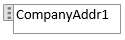

Create and Modify Custom Report Layouts
By default, a report will have a built-in report layout, which can be either an RDLC report layout or Word report layout, or both. You cannot modify built-in layouts. However, you can create your own custom layouts that enable you to change the appearance of report when it is viewed, printed or saved. You can create multiple custom report layouts for the same report, and then switch the layout that is used by a report as needed.
Note
In Business Central, the term "report" also covers externally-facing documents, such as sales invoices and order confirmations that you send to customers as PDF files.
To create a custom layout, you can either make a copy of an existing custom layout or add a new custom layout, which in most cases is based on a built-in layout. When you add a new custom layout, you can choose to add an RDLC report layout type, Word report layout type, or both. The new custom layout will automatically be based on the built-in layout for the report if one is available. If there is no built-in layout for the type, then a new blank layout is a created, which you will have to modify and design from scratch. For more information about RDLC and Word report layouts, built-in and custom layouts, and more, see Manage Report Layouts.
When custom report layouts are defined, you can select them from customer and vendor cards to specify that the selected layouts will be used for documents that you crate for the customer or vendor in question. For more information, see Define Document Layouts for Customers and Vendors.
To create a custom layout
Choose the
 icon, enter Report Layout Selection, and then choose the related link.
icon, enter Report Layout Selection, and then choose the related link.The Report Layout Selection page lists all the reports that are available in the company that is specified in the Company Name field at the top of the page.
Set the Company field to the company in which you want to create the report layout.
Select the row for the report that you want to create the layout for, and then choose the Custom Layouts action.
The Custom Report Layouts page appears and lists all the custom layouts that are available for the selected report.
If you want to create a copy of an existing custom layout, select the existing custom layout in the list, and then choose the Copy action.
The copy of the custom layout appears on the Custom Report Layouts page and has the words Copy of in the Description field.
If you want to add a new custom layout that is based on a built-in layout, do the following:
- Choose the New action. The Insert Built-in Layout for a Report page appears. The ID and Name fields are automatically filled in.
- To add a custom Word report layout type, select the Insert Word Layout check box.
- To add a custom RDLC report layout type, select the Insert RDLC Layout check box.
- Choose the OK button.
The new custom layout now appear on the Custom Report Layouts page. If a new layout is based on a built-in layout, then it has the words Copy of a Built-in Layout in the Description field. If there was no built-in layout for the report, then the new layout has the words New Layout in the Description field, which indicates that custom layout is blank.
By default, the Company Name field is blank, which means that the custom layout will be available for the report in all companies. To make the custom layout available in a specific company only, choose Edit, and then set the Company Name field to the company that you want.
The custom layout has been created. You can now modify the custom layout as needed.
Modifying a custom layout
To modify a report layout, you must first export the report layout as a file to a location on your computer or network, and then open the exported document and make the changes. When you are finished making the changes, you import the report layout.
To modify a custom layout
You export a custom layout from the Custom Report Layouts page. If this page is not already open, search for and open the Report Layout Selection page, select the report that has the layout that you want to modify, and then choose the Custom Layouts action.
On the Custom Report Layouts page, select the layout that you want to modify, choose the Export Layout action, and then choose Save or Save As to save the report layout document to a location on your computer or network.
Open the report layout document that you just saved, and then make changes.
If you are changing a Word layout, open the layout document in Word. For editing details, see the next section Making Changes to the Report Layout.
RDLC report layouts are more advanced than Word report layouts. For more information about modifying an RDLC report layout, see Designing RDLC Report Layouts.
Remember to save you changes when done.
Return to the Custom Report Layouts page, select the report layout that you exported and modified, and then choose the Import Layout action.
In the Import dialog box, select Choose to find and select the report layout document, and then choose Open.
Create and Modify Custom Report Layouts
To make general formatting and layout changes, such as changing text font, adding and modifying a table, or removing a data field, just use the basic editing features of Word, like you do with any Word document.
If you are designing a Word report layout from scratch or adding new data fields, then start by adding a table that includes rows and columns that will eventually hold the data fields.
Tip
Show the table gridlines so that you see the boundaries of table cells. Remember to hide the gridlines when you are done editing. To show or hide table gridlines, select the table, and then under Layout on the Table tab, choose View Gridlines.
Embedding Fonts in Word Layouts for Consistency
To ensure that reports always display and print with the intended fonts, regardless of where users open or print the reports, you can embed the fonts in the Word document. However, be aware that embedding fonts can significantly increase the size of the Word files. For more information about embedding fonts in Word, see Embed fonts in Word, PowerPoint, or Excel.
Removing Label and Data Fields in Word Layouts
Label and data fields of a report are contained in content controls in Word. The following figure illustrates a content control when it is selected in the Word document.

The name of the label or data field name displays in the content control. In the example, the field name is CompanyAddr1.
To remove a label or data field
Right-click the field that you want to delete, and then choose Remove Content Control.
The content control is removed, but the field name remains as text.
Delete the remaining text as needed.
Adding data fields
Adding data fields from a report dataset is a more advanced and requires some knowledge of the report dataset. For information about adding fields for data, labels, data, and images, see Add Fields to a Word Report Layout.
See Related Training at Microsoft Learn
See Also
Managing Report Layouts
Change the Current Report Layout
Import and Export a Custom Report or Document Layout
Working with Reports, Batch Jobs, and XMLports
Working with Business Central